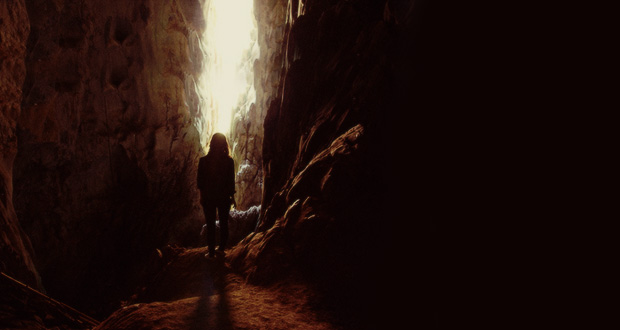

Não, eu não vou confiar nesse gato. Creio eu que seja perigoso ir atrás de conselhos de um gato falante. Nem sei se ele está falando a verdade. Acho melhor não. Vou agradecê-lo e desviar o caminho.
E assim fiz. "Tudo bem, mas tome cuidado. Essa caverna tem motivos para ser escura" Gato estranho. Claro que tem motivo por ser escura, ué, é porque a luz do sol não entra aqui. Fiz bem em não segui-lo.
Andei e andei e andei. Parecia que não tinha fim! Chegou em uma parte que tinha uma entrada para a direita e uma leve luminosidade azul: a saída é por ali.